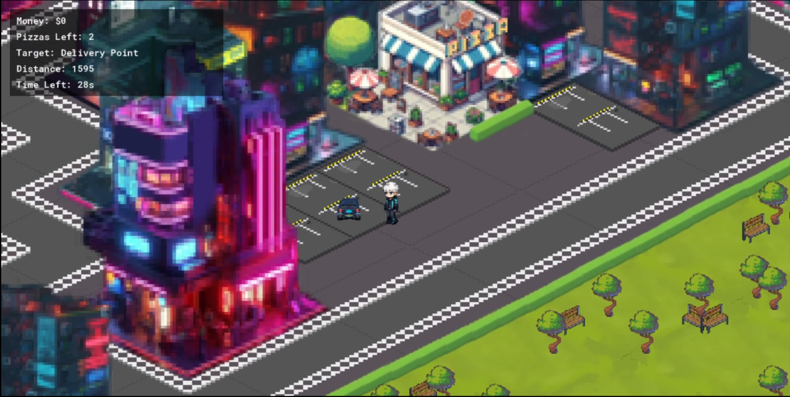
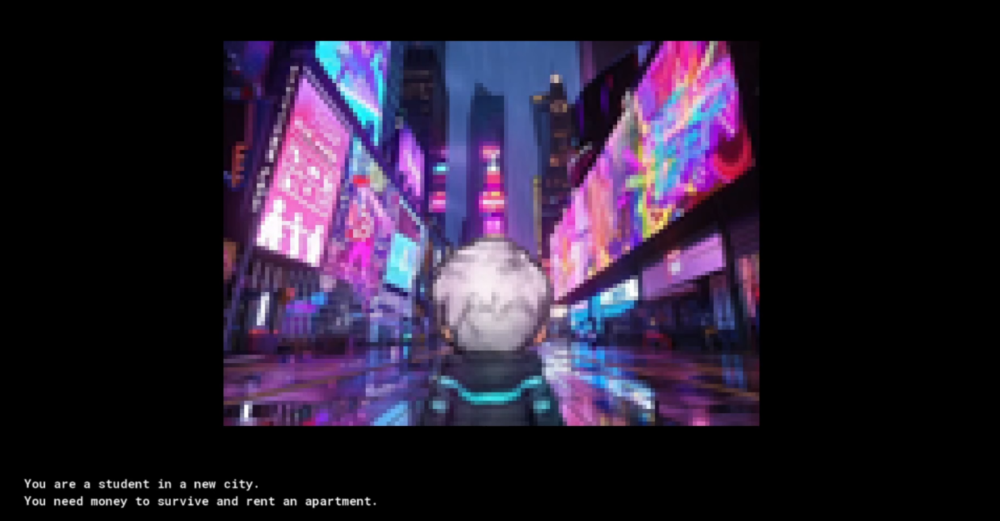
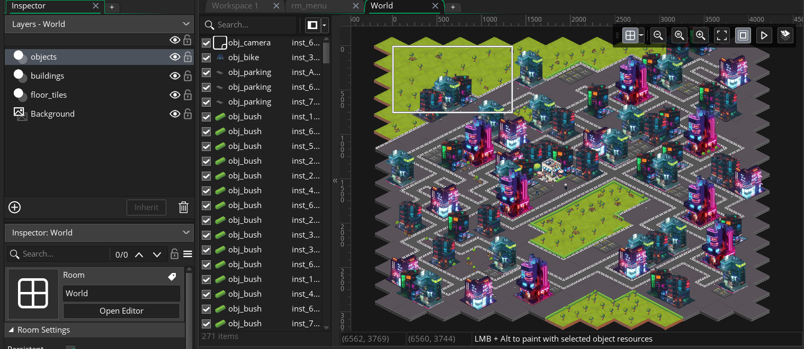
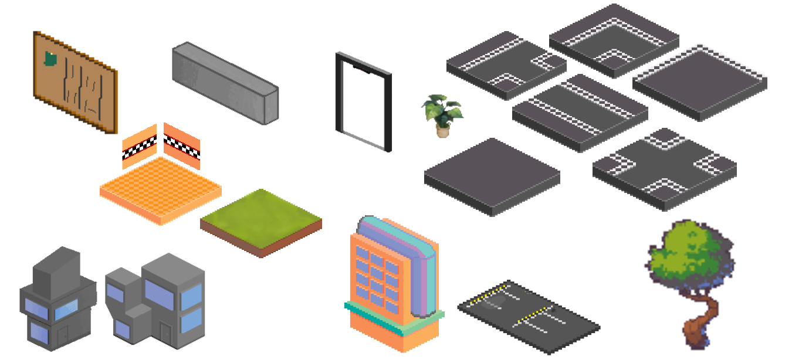

For a university project our team had to create a game themed around "Wayfinding" for the next-year international students.
The goal of the project is to help them face and overcome such issues as being away from home, managing school and work life, managing finances, cultural differences in a new place, or confronting one's ethical values.
Initially we had multiple concepts and ideas, but we decided to go with that of a "Rent Rush", as it contains all the important issues we wanted to address.
For example, the main idea of the game is to earn enough money to afford a place to live, which is often the biggest and the final obstacle for many international students, and ticking timer is not only a gameplay mechanic, but also a representation of pressure of deadlines and running out of time, that all of the students eventually face.

For the duration of this project I took on roles of a team leader and lead artist.
As a leader, my tasks were to coordinate team work and meetings, set goals and deadlines and establish communication within the team.
And as a lead artist I was setting up the asset list, the "Design Bible", create assets, and set up scene and it's layout.


Here are some of the assets that were created by me for this project.
Additionally, the buildings were used for the most of the duration of the project and during the playtests, and were eventually replaced in the end by my teammate for the final version of the game.